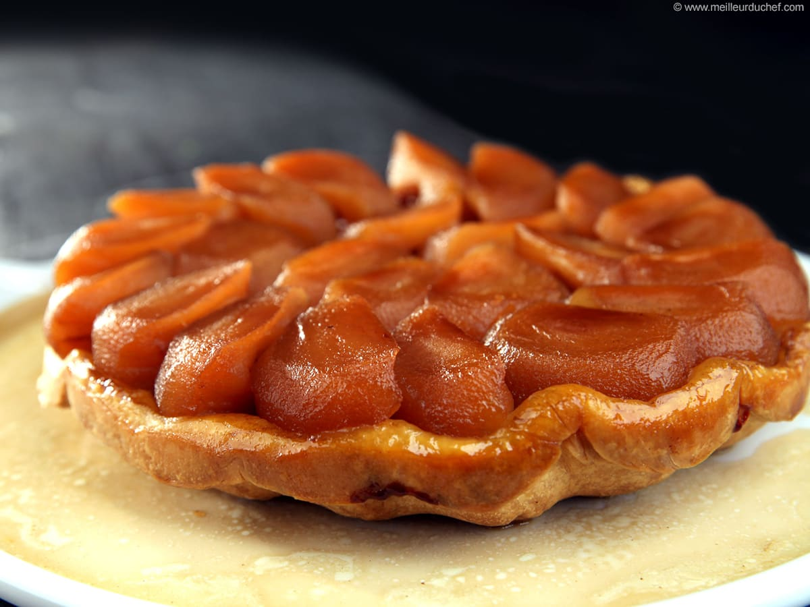

Préchauffez le four à 180 degrés. Mettez l’eau et le sucre dans une casserole. Lors de la caramélisation, ajoutez le beurre, baissez le feu et mélangez.
Épluchez les pommes, coupez-les en deux puis videz-les. Disposez les pommes dans la casserole. Ajoutez des pommes au fur et à mesure de la cuisson (les pommes réduisent à la cuisson).
Mélangez les ingrédients jusqu’à obtenir une pâte homogène. Étalez la pâte et formez un disque, puis coupez la pâte selon la largeur de la casserole. Mettez la pâte au réfrigérateur.
Une fois que le jus des pommes forme un sirop épais, ajoutez la pâte par-dessus, puis piquez la pâte à plusieurs endroits avec la pointe d’un couteau. Mettez la tarte au four pour une quinzaine de minutes.